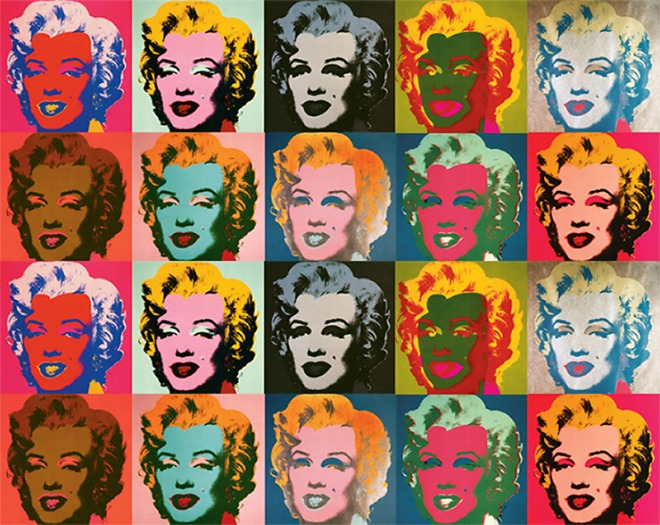
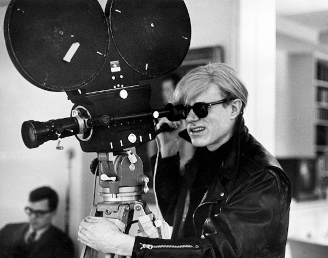

앤디워홀의 작품 세계
워홀의 작품 세계는 대부분 ‘미국의 물질문화’와 연관되어 있다. 그는 돈, 달러 기호, 식품, 잡화, 구두, 유명인, 신문 스크랩 등을 그렸다. 그에게 이런 주제들은 미국 문화의 가치를 의미했다. 예를 들어, “코카콜라는 언제나 코카콜라다. 대통령이 마시는 코카콜라는 내가 마시는 코카 콜라와 같은 그 콜라다”. 그는 대중에게 익숙하고 유명한 이미지를 이용해 20세기 미국의 문화적 정체성을 표현했다.

실크 스크린
실크 스크린 프린트를 제작 한편 1963년부터 1968년에 걸쳐 60편 이상의 영화도 다루었다. 그러나 실험영화 같은 작품으로 일반에 알려진 것은 적다. 처음 공개된 작품은 1966년 《첼시 걸즈》이며, 가장 유명한 것은 잠자는 남자를 5시간 동안 계속 비춰주는 《잠》(Sleep)(1963년)이라는 작품이다. 그는 액션 영화를 좋아하지 않았고 (본질적으로 동일함에도 불구하고, 사소한 차이를 고집하고 있기 때문에) 자신의 영화가 “근본적으로 같을 뿐만 아니라, 세세한 부분까지 완전히 똑같은 것”을 원했다. 끝없이 변화가 없는 영상은 보편적인 것을 테마로 한 워홀의 관점에서 보면 이상적인 것이었는지도 모른다. 이후에도 영화 제작을 하였고, 극 영화도 제작하였다. 뉴욕의 유명 호텔 “첼시”를 무대로, 각 객실에서 펼쳐지는 인간의 희로애락을 임의의 2방만 적절한 시간을 선택하여, 2개의 화면을 이용하여 무작위로 계속 비춰주는 (도중 한쪽 스크린은 니코의 모습이 임의로 삽입된다), 《첼시 걸즈》(1966년)는 미국에서 출판에서 대히트를 했다.
1970년대에 들어와서는 이전의 작품은 완전히 다른 조 달레산드로(Joe Dallesandro)와 우도 기어(Joe Dallesandro)를 주연으로 한 《악마의 죽음》(1974년)와 《처녀의 생피》(1975년) 등 공포 영화 감독도 시도하였다.

영화
초기에는 아크릴 물감 등으로 캔버스에 그렸지만, 1960년대 이후에는 판화의 실크 스크린 프로세스를 많이 사용하였다. 공판 인쇄인 실크 스크린 프로세스의 원리는 평평한 “프린트 고코”와 같은 것으로, 작가가 직접 인쇄에 종사하지 않아도 만들 수 있을 정도로 대량생산에 적합한 기술이다. 그는 기계로 만들어 내듯 실크 스크린 작품을 찍어내는 아틀리에 《팩토리》를 마련하여 많은 젊은이를 고용하여 제작에 종사하게 했다. 한편, 같은 판을 사용하여 의도적으로 프린트를 늦추거나 잉크를 많이 쓰게 했다. 실크 스크린 모티브로 한 것들은 다음과 같은 것들이 있다.